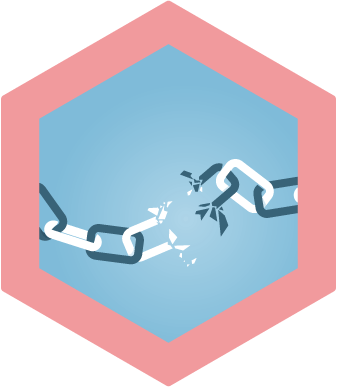

Les six risques à surveiller au cours de la
prochaine décennie

Cyberrisque
La pandémie de COVID-19 et le passage à un milieu de travail numérique ont augmenté notre dépendance à l’égard de la technologie et, par conséquent, notre exposition aux risques de cybermenaces.
Risques liés à la chaîne d’approvisionnement et aux fournisseurs
Les entreprises sont encore et toujours confrontées à des pénuries d’approvisionnement, à des retards et à une hausse des coûts des produits de base – et, par le fait même, les consommateurs le sont aussi.
Risque de pandémie
La crise a perturbé différents aspects de nombreuses organisations mondiales, mais ce sont les employés qui devraient en subir les effets les plus persistants au cours de la prochaine décennie.
Risque lié aux changements climatiques
Le réchauffement planétaire entraîne de nombreux risques – risques opérationnels, incertitude réglementaire, incertitude croissante sur les marchés du transfert du
risque – et il influencera sans doute les préférences des consommateurs.
Risque lié à la propriété intellectuelle
Il devient urgent pour les entreprises de protéger leur propriété intellectuelle (PI), c’est-à-dire les brevets, les droits d’auteur, les marques de commerce et les secrets commerciaux qui forment, collectivement, une vaste catégorie d’actifs qui prend
de l’ampleur.
Risque d’atteinte à la réputation
L’omniprésence des médias sociaux, l’actualité 24 heures sur 24, 7 jours sur 7 et le flux quasi constant d’incidents très médiatisés ne font qu’accentuer l’importance des risques d’atteinte à la réputation et des dommages qu’ils peuvent entraîner, au cours des dix prochaines années.
Risque d’atteinte à la réputation
Il devient urgent pour les entreprises de protéger leur propriété intellectuelle (PI), c’est-à-dire les brevets, les droits d’auteur, les marques de commerce et les secrets commerciaux qui forment, collectivement, une vaste catégorie d’actifs qui prend
de l’ampleur.